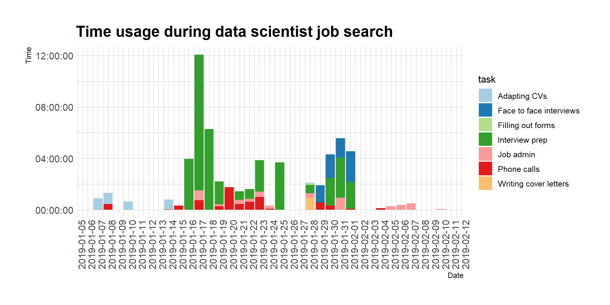
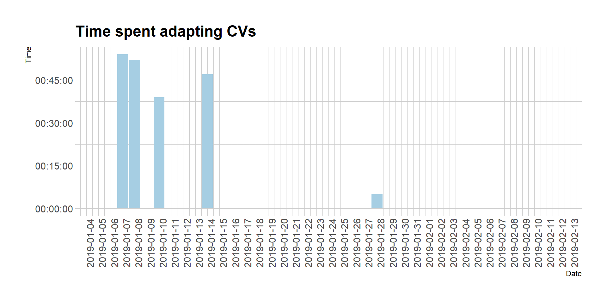
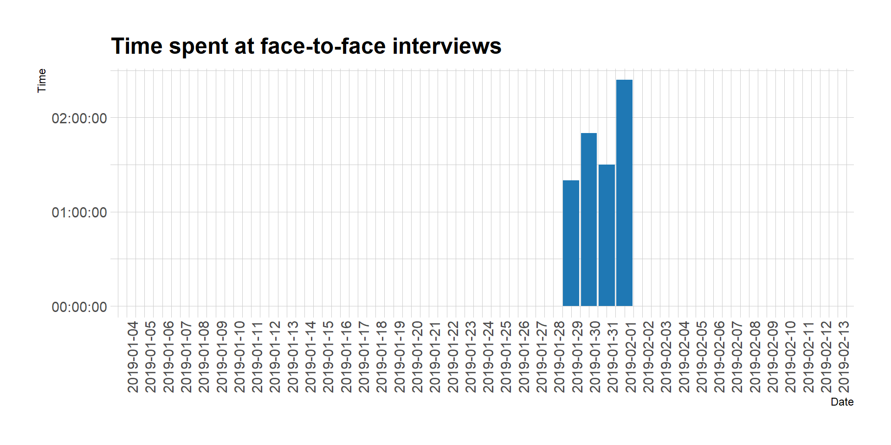
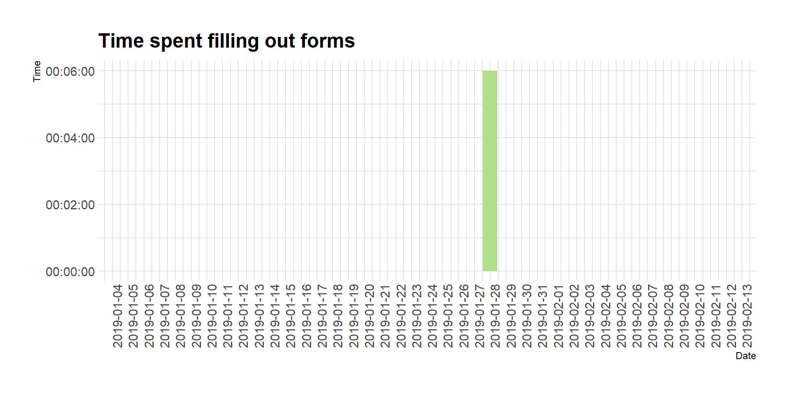
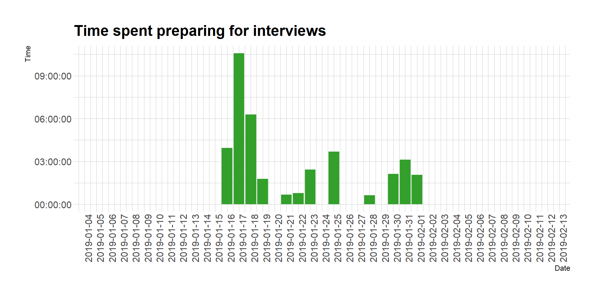
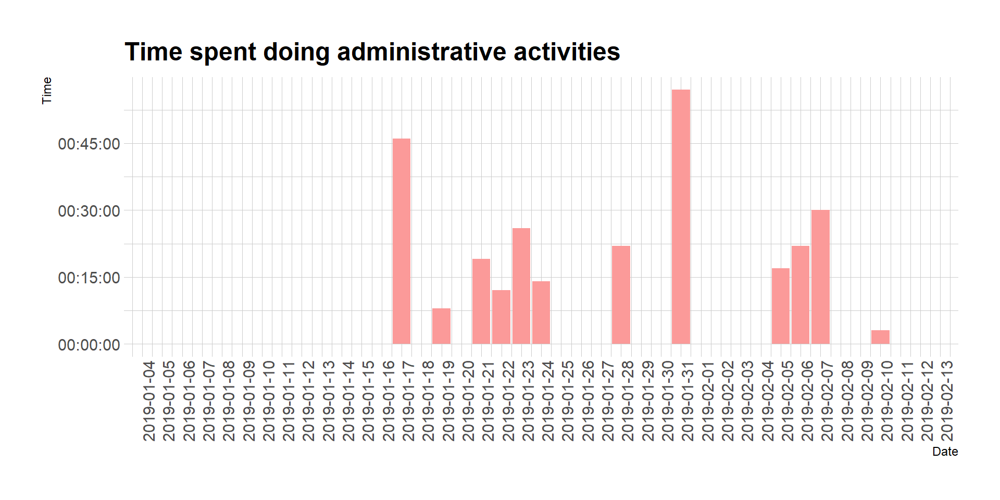

1 Summary
In this post I share how I spent my time during my data scientist job search. I then use this information to point out things I would have done differently and things I’m glad I did. The content of this blogpost was first presented at R-Ladies London on 2019-02-21 with this presentation is here:
To summarise:
Would have done differently:
- Establish healthy boundaries with recruiters
- Focus on the basics for technical tests
- Schedule interviews at favourable times
- Practice not knowing and staying confident
Glad I did:
- Have a mentor to support you along the way
- Be transparent about other interviews
2 Why?
I just finished a month-long data scientist job search in London. It was successful because it produced the data scientist role I’m about to start. I’m excited! Despite the success, there are things I could have done differently. My job search included international relocation, which did not make it easy. Also, during the third week I went to four job interviews in a row. This was not a good idea. Now that the dust has settled, I share these and other lessons with three objectives in mind:
Is there anybody out there? I’d like to know if others have gone through a similar situation and if so, please leave a comment or write me an e-mail about your experience. It’s important to hear how others overcame the obstacles I had to deal with and what obstacles have others faced.
To guide/advice others: Of course, this was my personal experience and I would take it with a grain of salt. After all, I’m just one observation and that’s why we need a bigger sample size (see objective 1). However, I do hope this will be helpful to someone in their data scientist job search.
For my future self: Hopefully I won’t have to go through a job search in a while but as a memento of what has happened, I’d like to leave these lessons for my future self.
3 Here’s how I spent my time
I track time spent working to update my learning loop and allocate time. I tried to extend this to my job search by tracking as many activities as possible. I now discuss the tasks I show in the plot.

3.1 Adapting CVs
On the 5th January 2019 I met my mentor (more on this later). We went through my CV and my LinkedIn profile in detail. After, I dedicated a few hours to putting what she suggested into practice. This activity had a high return on investment.

3.2 Face-to-face interviews
This is one of my to-improve points. I scheduled four interviews in one week just two days after I moved countries with all my belongings. DO NOT DO THIS. I could have spaced out interviews as this was not necessary. This ended up having a negative impact on my performance at interviews, especially those scheduled later in the week.

3.3 Filling out forms
This was a surprise. I thought I would have to fill out more job applications than I did. The time spent here was minimal because I ended up working mostly with recruiters. I wish I would have tracked it but most of my applications were through LinkedIn. I also had the intention to fill out my details on other job search platforms like Indeed, Monster, etc. but this ended up not being necessary.

3.4 Interview prep
This includes researching companies and preparing for technical tests, doing technical tests. Notice the peak on 17th January? That was me prettifying plots as part of a technical test üíÖ
During my interview week I split the day between being at interviews and then cramming for the next. This was not fun and led to sub-optimal results.

3.5 Job admin
This is basically everything related to sending e-mails to arrange phone calls, or interviews, and towards the end, going over the final job offer, signing, sealing it and delivering it to my new employer.

3.6 Phone calls
This is another point to improve. At the beginning I was taking way too many unexpected phone calls from recruiters. This was an inefficient use of both parties’ time. After a bit I tried to push back by asking for job specs first and then scheduling calls. More on this later. Phone calls also included technical interviews but these were only about two hours of the total seven hours spent on phone calls.
3.7 Writing cover letters
Again, surprisingly low. Only wrote one cover letter and didn’t hear back from that company. The data scientist job search works in mysterious ways.

4 What would I have done differently?
Here’s the fun bit where I tell you how I fell down and scratched my knee so you don’t have to.
4.1 Establish healthy boundaries with recruiters
This was my first time working with recruiters. I wasn’t sure about how much time and attention to allocate to working with them and/or how to do it. At the beginning I always picked up the phone. Most of the conversations didn’t add much value and were more of an interruption and distraction. I wasted a lot of time and headspace taking random recruiter calls, as I was moving countries, I could have invested those resources elsewhere.
What would I do now?
After a week of this, I set this workflow for myself. My first point of contact is either LinkedIn or e-mail. If someone reaches out with a fantastic opportunity that seems especially well suited for me, I will say, “sounds great, please send over the job spec first”. I will then sit down and read the job spec. After, I will Google the company, find the employees on LinkedIn and pause. Then I will reflect on whether I want to go forward or not. If I don’t feel excited, move on immediately. Politely reply: “Thank you, however, this is not a good fit for me at this time.” If I do feel excited, then go ahead and schedule that call. Make sure that I pick up only at the time it was scheduled.
4.2 Focus on the basics for technical test prep
There are statistics and programming basics that every data scientist should know. You would think that because they are basics you would never forget them. Not me. During the last few months I had focused on re-writing manuscripts based on analysis done in the summer. I enjoyed the Christmas/New Year break and was focused on moving countries. I hadn’t touched some bread and butter activities in a few months nor did I think about refreshing basic data wrangling or stats 101. Instead, I was out to impress and googled advanced data science interview questions. This strategy was flawed. I failed some technical questions that were not hard, I was just out of practice. When I think about it, I was just asked one neural network question, the rest was basics.
What would I do now?
I would focus less on specific algorithm details and just throughly freshen up on stats 101, data cleaning and wrangling basics by heart including syntax in both R and SQL.
4.3 Schedule interviews at favourable times
I realise I was somewhat nervous about having any time gaps in my CV. This led me to cram moving countries and going to job interviews. I was so excited about the search that I allowed interviews to be scheduled one after another just a few days after moving house. This wasn’t necessary and of course had a negative impact on my job search. I couldn’t devote my full attention to interview prep.
What would I do now?
I don’t think leaving a one month time gap would have had any negative consequences. Instead it would have given me enough time to settle in to start ramping up the interviewing process. I would also try to schedule interviews with at least one day in between and in the morning, if possible.
4.4 Rehearse not knowing, or being wrong, and feeling embarrassed/nervous/uncomfortable and STILL speaking with confidence
I have a new found respect for politicians. When they announce a policy or a plan at a press conference, inevitably they will be asked something they do not know. They might even be corrected on something they just said. The ability to keep calm or appear calm is something they have practiced over and over. I had no idea how important this skill is to practice until I went through this round of interviews.
Public speaking has a been a priority because I tend to speak too fast and I could benefit from adding more intonation to my presentations. With that feedback in mind, I took locution lessons and joined public speaking clubs. Generally, you improve on the skill you practice. I had practiced speaking in a safe, controlled environment using rehearsed responses. I therefore, improved on speaking in a safe, controlled environment using rehearsed responses. That is NOT the public speaking skill you will need for data science interviews. Here, you need to practice not knowing, being corrected, and STAYING CHILL. I did not practice this skill at all. I let a couple of questions or situations, which unsettled me, have an impact on the rest of my interview. Not ideal.
What would I do now?
I like public speaking clubs like Toastmasters because they have made me aware of my impact on an audience. I can tell when people are zoning out and what I have done to cause that. It’s helped me improve my pace, pauses and intonation. But what I think would be better practice in this context is joining a debate club. In a debate there is another team actively pushing against you and trying to undermine what you’re saying. Constantly. If they’re skilled, they might even attempt to provoke a reaction. That’s what I need to practice. Can anyone recommend debate clubs in London?
5 What would I do again?
5.1 Have a mentor to support you along the way
Through R-Ladies I met Raquel Redó, a data scientist based in Barcelona. Although the timing wasn’t right because I was moving, we made sure we met face to face at least twice. Raquel has been doing data science work for a while and is very enthusiastic about supporting other women in the field. Perfect! She herself has gone through the data science interview process and had very wise words to offer. I think what made our mentorship work was that I wrote down all her advice after our first meeting and went off and did it. I put as much of her advice I could into practice. When I had scheduled my final round interviews, we went over the companies and she gave me some advice on them too. Going through data science interviews can feel a bit lonely and it’s easy to doubt yourself. Having a mentor helped me make my search feel legitimate to myself and kept me accountable. This was good to have.
5.2 Be transparent about other interviews to everyone
This is very important for several reasons. First, you can manage expectations and follow ups. Imagine interviewing a candidate, offering them a position and then for days not hearing back from them. Rude. Do you even want this person to join your team? It also helps you to have some leverage in terms of package negotiation. At their request I disclosed to the recruiters I was working with, what offers other companies had made and without sharing details, I‚Äôm glad I did this üíØ!
6 Conclusion
The data science job search is quite to different to others. In my experience, very little time was spent filling out forms or writing cover letters. It was more about thoroughly researching the company and articulating how you will help them while keeping your technical and social abilities current and fresh. There are always things to improve upon and by distilling the four lessons I’ve shared, I hope to correct them next time. I also hope to hear from others who have gone through a similar processes and learn about their trials and tribulations. There are some things I got right, after all, I’m very excited to start my data scientist job soon. This worked for me but will not necessarily work for you so take my experience with a grain of salt. Finally, enjoy the process! It was fun to go to so many offices, meet so many people, and interview my interviewers. I’d like to think we both enjoyed the process. Hope to hear from your experience in the comments or privately through e-mail.